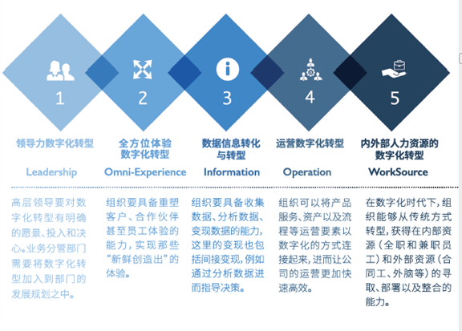
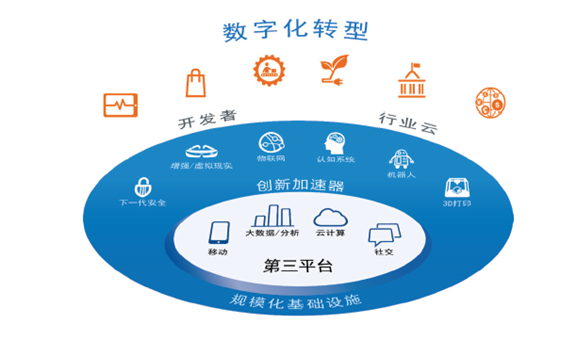

解决方案
今慧技术提供了较高层次的专业技术支持，从需求分析、系统设计直至开发实施、产品交付，我们都能出色的完成。我们甚至会站在客户的角度去为产品的创新出谋划策。 今慧技术凭借经验丰富的全球化开发团队和技术专家，为客户提供更规范、更专业的软件系统设计与开发，使的客户的产品质量更加稳定可靠、功能更加新颖独特。
数字化转型的两个关键点
数字化转型的本质是一系列的商业战略，企业选择合适的数字技术将业务流程、管理模式和生产方式的方方面面进行重构以适应新的竞争态势，获取竞争优势。其中有两个关键点，一是面向数字化转型过程中，核心商业战略的选取与关注，从业务的顶层设计上应对数字化竞争、拥抱数字化转型；二是面向不同商业模式、面向不同商业战略所选取的数字化技术，将前期设计的蓝图通过最合适的技术落地实施。
在商业战略层面，企业领导力、客户体验、数据信息、运营、（人力）资源的数字化转型是战略上需要首要关注的5个方面。用一句话来解释这5个方面的关系，就是 “有目标，有方法，有支撑” 。有目标是以提升客户数字化转型整体成熟度为终极目标，实现客户数字化转型成功，提升用户的体验；有方法就是通过一系列的连接实现流程优化，利用连接中产生的数据进行决策指导，为体验的提升打下基础；最后就是有支撑，不仅要有高层战略和政策的支撑，同时还需要背后的资源，尤其是人力资源来支撑，进而确保目标的实现。
在梳理了数字化转型所囊括的5个核心战略之后，我们聚焦到数字化技术本身。市场上的数字化技术种类繁多，但归纳起来最核心的是IDC提出的 “4+6” 模型 ，即第三平台的4大支柱技术，以及在此基础之上的6大创新加速器。具体来说，IDC认为第一平台的代表是大型机（Mainframe）；而第二平台则是PC以及客户机/服务器（C/S架构）；到了当下的第三平台，更多的是云计算、大数据、社交以及移动技术的全面兴起；同时，随着物联网、人工智能（认知系统）、虚拟/增强现实、机器人、3D打印以及下一代安全这些新兴技术的引入，全面支撑了各个行业，尤其是传统行业的数字化转型。基于上述商业战略和企业自身的实际情况，对这十项技术进行选型、落地和实施就是企业数字化转型成功的关键保障。
